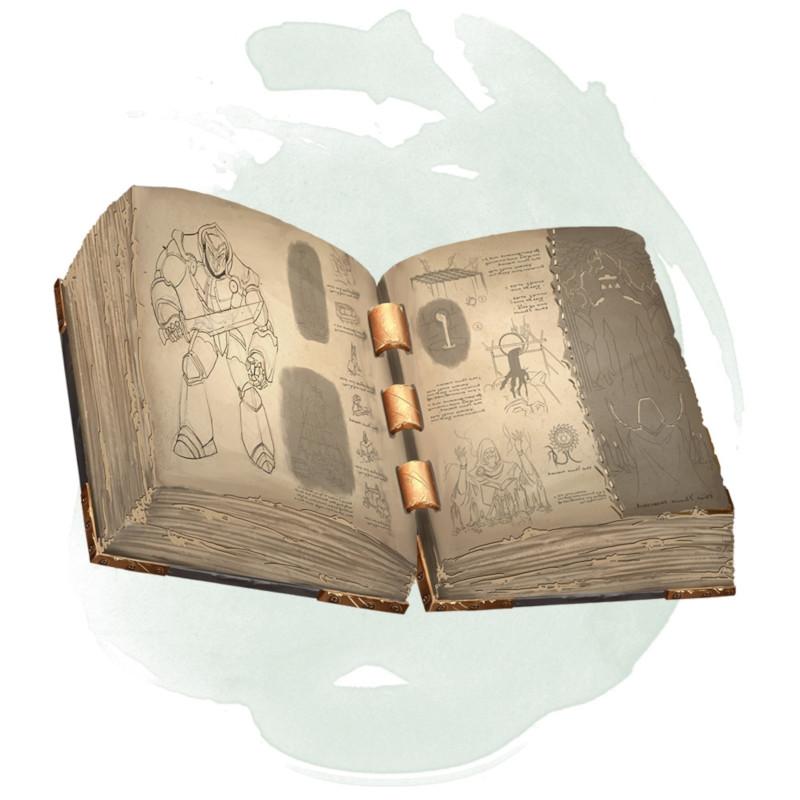

Manuel des golems
[ Manual of Golems ]
Objet merveilleux, très rare
Ce livre contient les informations et incantations nécessaires pour créer un golem d'un type particulier. Le MD choisit le type ou le détermine aléatoirement. Pour déchiffrer le manuel et l'utiliser, vous devez être un lanceur de sorts possédant au moins deux emplacements de sorts de niveau 5. Une créature qui ne peut pas utiliser le manuel des golems et qui tente de le lire subit 6d6 dégâts psychiques.
Pour créer un golem, vous devez y passer le temps indiqué sur la table ci-dessus, travaillant sans interruption avec le manuel en main et en ne vous reposant pas plus de 8 heures par jour. Vous devez également dépenser le montant indiqué en achat de fournitures et autres matériels nécessaires. Une fois que vous avez terminé de créer le golem, le livre est consumé par des flammes occultes. Le golem s'anime lorsque les cendres du manuel sont répandues au-dessus de lui. Le golem est sous votre contrôle, et il comprend et obéit aux ordres oraux que vous lui donnez.
| d20 | Golem | Temps | Coût |
|---|---|---|---|
| 1-5 | Argile | 30 jours | 65 000 po |
| 6-17 | Chair | 60 jours | 50 000 po |
| 18 | Fer | 120 jours | 100 000 po |
| 19-20 | Pierre | 90 jours | 80 000 po |
Pour créer un golem, vous devez y passer le temps indiqué sur la table ci-dessus, travaillant sans interruption avec le manuel en main et en ne vous reposant pas plus de 8 heures par jour. Vous devez également dépenser le montant indiqué en achat de fournitures et autres matériels nécessaires. Une fois que vous avez terminé de créer le golem, le livre est consumé par des flammes occultes. Le golem s'anime lorsque les cendres du manuel sont répandues au-dessus de lui. Le golem est sous votre contrôle, et il comprend et obéit aux ordres oraux que vous lui donnez.
Dungeon Master´s Guide (SRD)
